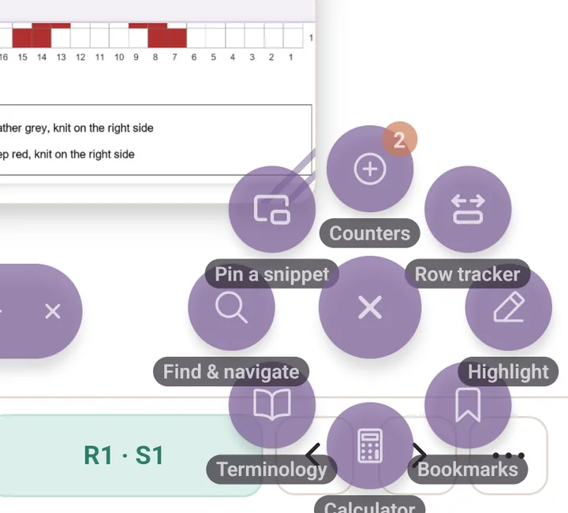
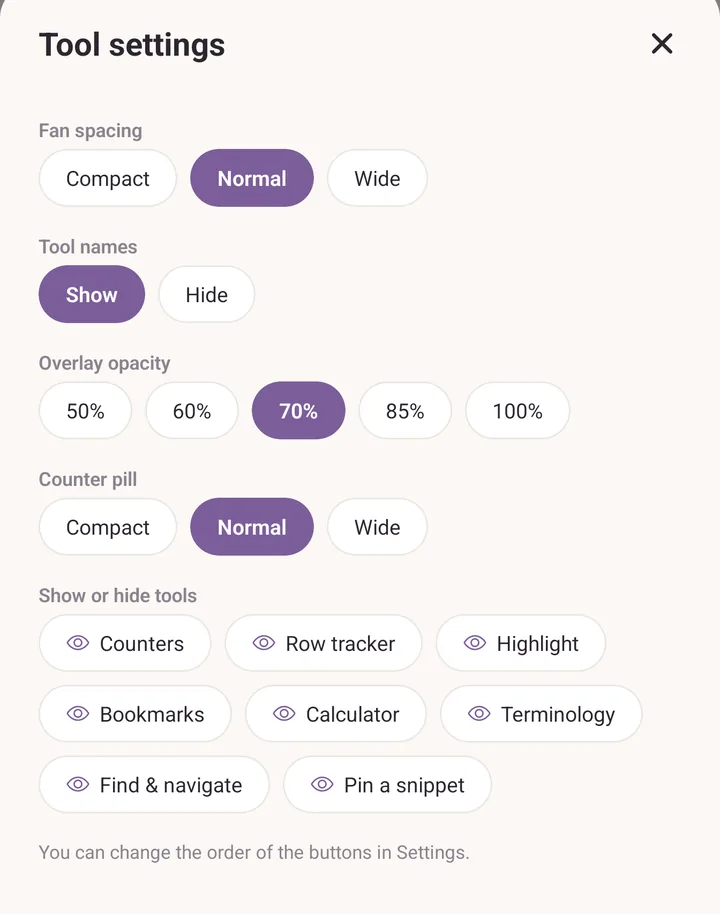
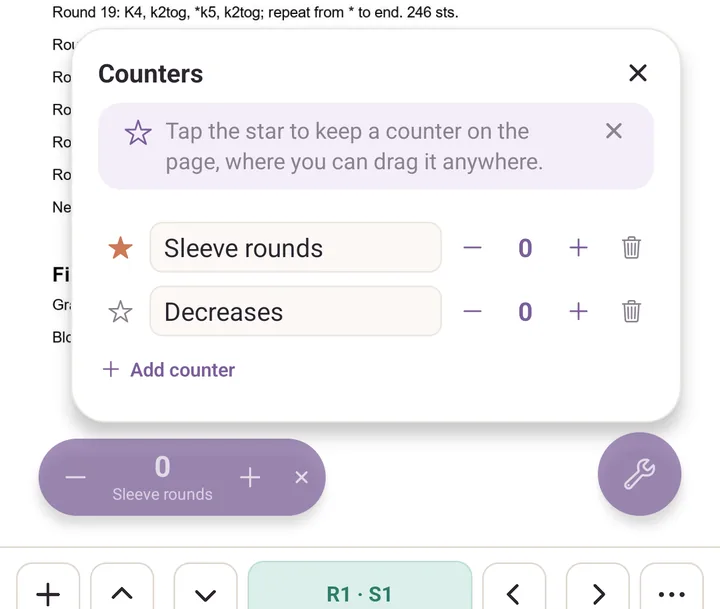
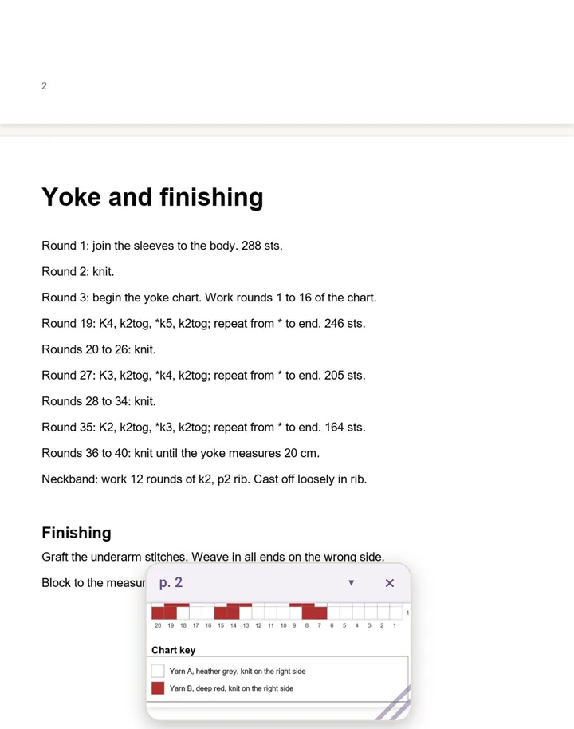

PDF tools
The floating button in the PDF viewer, and everything behind it. This is the most-featured screen in Purl by a long way.
The floating button
Tap the round floating button and eight tools fan out around it, each with its name under it:
- Counters for plain tally counters you can park on the page.
- Row tracker for the band that follows the row you are on.
- Highlight for pen, marker, eraser, select and ruler.
- Bookmarks for bookmarks and sticky notes.
- Calculator, Terminology, Find & navigate, Pin a snippet.
All eight are on from the start. Tap a tool to use it, tap the button again to close the fan.

Drag the button anywhere on screen and it stays there, in this pattern and the next.
Hold it for half a second to open Tool settings:
- Fan spacing: Compact, Normal or Wide.
- Tool names: Show or Hide the names under the buttons.
- Overlay opacity and Counter pill size.
- Show or hide tools: tap a tool to drop it out of the fan. At least one stays.
The order of the buttons is changed in Settings, the gear in the More header, under PDF speed-dial buttons.

One tool only. Hide seven of the eight and the floating button stops being a fan: it becomes that one tool, with its icon, one tap away. Handy if you only ever use the row tracker.
Counters
Counters opens a small panel. Add counter adds one, and you type its name over the placeholder. Plus and minus count it up and down.
Tap the star beside a counter to keep it on the page as a floating pill, then drag the pill wherever it is out of your way. This is the part most people miss: without the star, the counter only exists inside the panel.
If you set Default counters in Settings, those names are added automatically the first time you open a new pattern's counter panel.

Counters without a pattern
The counters above belong to the pattern you are reading. For counting something with no pattern under it, a row repeat, rows between increases, days of advent knitting, there is a separate tool: More, then Counters under Tools.
It works the same way. Add a counter, give it a name and an optional target, tap minus and plus to count. Hold either one and it keeps counting, faster the longer you hold, so catching up twenty rows takes a moment rather than twenty taps. Drag the handle on a card to reorder them.
Row tracker
Row tracker puts a highlight band across the page. The first time, the Trackers sheet opens instead, because there is nothing to follow yet. It holds two add buttons, Row counter and Chart, and lists everything you have already made for this pattern. The plus at the left of the tracker bar reopens it, so you can switch between a counter and a chart at any time.
Drag the band onto your row. On the bar: up and down arrows step rows, the two buttons right of the row number make the band shorter or taller, the padlock locks the band so you cannot knock it out of place, and the three dots open Counter options (Lock, Row reminders, Delete counter).
Tap the row number to open Counter:
- Counter name and Current row.
- Target, so the counter reads 24 / 60.
- Count by, for every second or every fourth row.
- Count down, to show rows remaining instead of rows worked.
- Reverse direction, which counts up when you move the band the other way. That is what you want for a chart read from the bottom up.
Row reminders pop a banner up at a row you choose. Add reminder, then At a row for a one-off or Every N rows to repeat.
Chart tracker
Chart in the Trackers sheet drops a box on the page. Drag its corners or its centre to fit it over a printed chart, pinching and panning the page underneath to line it up, then tap Looks good.
The Chart tracker sheet then asks for Stitches across and Rows, and for the Starting corner where row 1, stitch 1 begins. Rows alternate direction is for flat knitting. Show grid draws faint cell lines over the chart once you are zoomed in enough to see them. Tap Save grid.
The bar reads R1 · S1 with the current cell lit and its whole row picked out. Side arrows step stitches, up and down arrows step rows, and the readout says Complete at the last cell. Tap the readout to open Go to position and jump to any row and stitch.
The same sheet later offers Adjust the box, Duplicate this chart and Remove chart. A pattern can hold as many charts as you like, each with its own name.
Highlight
Highlight opens one row of icon buttons: marker, pen, eraser, select and ruler on the left, undo, redo and Done on the right. A coloured bar under the active tool shows its colour.
Tap a tool twice to open its options: colours, Size, and for the marker Opacity. At low opacity the marker is a highlighter.
Presets. The three round chips at the top of a pen's options each hold a whole pen: tool, colour, size and transparency. Tap a chip to switch to it. Hold a chip to save your current pen into it. They come set up as a yellow highlighter, a pink marker and a red pen.
Hold for a perfect shape. Draw, then hold your finger still: a line snaps straight and locks level near horizontal or vertical, a rough ring becomes a smooth oval, a loop with corners becomes a neat box. Keep moving while holding to adjust, lift to keep it.
Eraser options (tap the eraser twice) switch between Whole stroke and Part of stroke, and hold Clear drawings…, which asks This page only or All pages before it wipes anything.
Select draws a loose loop round some marks and boxes them together. Drag the box to move them all, or Delete to remove them. Its options offer Freehand or Box.
The ruler is modal, and this catches everyone out: one finger along the ruler draws a line, two fingers move the pattern. Drag it where you want it, rotate it by the corner handle, and strokes snap to its line.
One finger draws. Two fingers pan. A single finger anywhere else would draw a stray stroke.
Bookmarks and notes
Bookmarks opens Bookmarks & notes, which lists everything you have marked in this PDF. Tap an entry to jump to it.
- Bookmark current spot marks where you are, no typing needed.
- Drop a note then asks you to tap the page where you want it. Type the note and save. There is no separate sticky-note button in the fan: notes start here.
Tap a note's marker to edit it, and drag it to move it. A note can show its text directly on the page instead of as a marker: open it and choose Text on the page, or Pin to go back to a marker. A note left empty is simply a bookmark.
Find & navigate
- Page thumbnails: a filmstrip of every page, current one outlined.
- Go to page: tap the page counter and type a number.
- Search the pattern: any text, listed with a bit of context. Accents do not matter, so "Jarbo" finds "Järbo".
- Night reading: dark pages, light print. Your drawings keep their colours, and the choice carries to the next pattern.
Pin a snippet
Frame the chart key, a size table or a decrease sequence and tap Looks good. It floats in a small window that stays put while you scroll.
Drag the window by its header, resize it from the bottom right corner, and use the arrow in the header to collapse it to a slim pill. Tap the header without dragging to jump back to where it was framed, which Purl asks about first. Up to four per pattern, and they come back next time you open it.
While framing, only the corner handles and the centre grip take your finger, so the page still pans and pinches underneath.

Calculator and Terminology
Calculator opens six tools: Quick math, Gauge from a swatch, Stitches and rows for a width, Adjust a pattern to your gauge, Increase / decrease evenly and Skeins needed. See Calculator.
Terminology opens the glossary in the pattern's craft, for when a "sl1, k2tog, psso" needs unpicking mid-row. See Terminology.
Moving around the page
- Scroll with your finger.
- Pinch to zoom. Pinch further out for an overview of several pages and tap the one you want.
- Triple-tap anywhere to reset the zoom to fit-width.
What is saved
Drawings, notes, bookmarks, row trackers, counters, chart trackers, pinned snippets and your scroll position all come back exactly as you left them when you reopen the pattern.
Settings that change the PDF viewer
Settings is the gear in the More header.
Under Defaults:
- PDF defaults: Default tool, Marker size, Pen size, Ruler on by default, Row tracker on by default.
- Keep screen awake: the screen stays on while a pattern is open, so it does not go dark mid-row. On to start with, and worth knowing about before you blame your device.
- Default counters: names added automatically to a new pattern.
Under Tool configuration: Overlay opacity, Counter pill size, and PDF speed-dial buttons for the order and the show/hide list.
Under Advanced: PDF colour palette, the six colours offered in the drawing toolbar.
See also
- Read a pattern: the three-run tutorial.
- Patterns: how PDFs get into your library.
- Backups and recovery: your annotations travel with a backup.